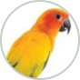

Components in this design
Everything the Animal page and Assessment tab are built from, rendered with the same CSS the prototype loads. Green tags come from the Antz library (app/components.css). Amber tags were built inside the prototype and aren't in the library yet.
14 library components16 built in the prototype26 icons16 type styles
From the library
app/components.cssBody WeightRaja · every 7 days · last 6 days ago
Give the assessment a name
ActiveAvailable in animal templates
Allow range selectione.g. 60 – 100 bpm
BCS-guide.pdf
 M
F
M
F

UBuilt in the prototype
core.css · species.css · touch.cssBuilt on library tokens, but not in the library yet. Candidates for Needs Review.
RajaAcinonyx jubatusSpecies: CheetahSex: MaleSite: North ZoneEncl: E-12AID: ANZ-00104
IndividualChipped
Up to dateDueOverdueInactiveNumber
1.2%3.4%No change
1Emaciated3Ideal5ObeseHealthyMild shedding
ASSESSED9 / 123 due · every 7 days
GAINING4> 2% in 30 days
LOSING2> 2% in 30 days
STABLE3within 2%
Latest42.6 kg
Average41.9 kg
Lowest39.8 kg
29 Sep10:20 AM42.6kgAte well after fasting day.Dr. Rao
22 Sep9:05 AM42.1kgPriya K.
StepGap between values
Body Weight
Body Weight saved
MRajaANZ-0010442.6 kg+1.2%FZaraANZ-00084—Due
WeightPhysical Health
57.6kg↑ 0.1 kg
Last tested on 29 Sep 2026
PREVIOUS57.5 kgAVERAGE56.8 kgMIN55.4 kgMAX57.8 kg
29 Sep 202608:41 AM
57.6 kg
Slight change from last week, keep monitoring.
Dr. Mehta29 Sep 2026 • 08:41 AM
References
Icons
app/icons/icons.cssType styles
app/type.cssThe Antz text styles from Figma that this prototype uses, largest first. All are Inter. Each row shows the Figma name, a sample, then size · weight · line-height · letter-spacing (read from the page as it renders) and where the style is used.